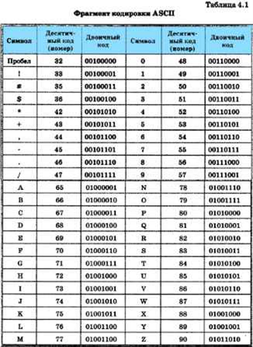
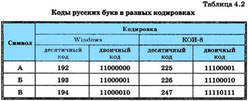

4.6.1. Представление текстовой информации в памяти компьютера
Текст состоит из символов — букв, цифр, знаков препинания и т. д., которые человек различает по начертанию. Компьютер различает вводимые символы по их двоичному коду. Вы нажимаете на клавиатуре символьную клавишу, и в компьютер поступает определённая последовательность электрических импульсов разной силы, которую можно представить в виде цепочки из восьми нулей и единиц (двоичного кода).
Мы уже говорили о том, что разрядность двоичного кода i и количество возможных кодовых комбинаций N связаны соотношением: 2i = N. Восьмиразрядный двоичный код позволяет получить 256 различных кодовых комбинаций: 28 = 256.
С помощью такого количества кодовых комбинаций можно закодировать все символы, расположенные на клавиатуре компьютера, — строчные и прописные русские и латинские буквы, цифры, знаки препинания, знаки арифметических операций, скобки и т. д., а также ряд управляющих символов, без которых невозможно создание текстового документа (удаление предыдущего символа, перевод строки, пробел и др.).
Соответствие между изображениями символов и кодами символов устанавливается с помощью кодовых таблиц.
Все кодовые таблицы, используемые в любых компьютерах и любых операционных системах, подчиняются международным стандартам кодирования символов.
Кодовая таблица содержит коды для 256 различных символов, пронумерованных от О до 255. Первые 128 кодов во всех кодовых таблицах соответствуют одним и тем же символам:
• коды с номерами от О до 32 соответствуют управляющим символам; • коды с номерами от 33 до 127 соответствуют изображаемым символам — латинским буквам, знакам препинания, цифрам, знакам арифметических операций и т. д.
Эти коды были разработаны в США и получили название ASCII (American Standart Code for Information Interchange — Американский стандартный код для обмена информацией).
В таблице 4.1 представлен фрагмент кодировки ASCII.
Коды с номерами от 128 до 255 используются для кодирования букв национального алфавита, символов национальной валюты и т. п. Поэтому в кодовых таблицах для разных языков одному и тому же коду соответствуют разные символы. Более того, для многих языков существует несколько вариантов кодовых таблиц (например, для русского языка их около десятка!).
В таблице 4.2 представлены десятичные и двоичные коды нескольких букв русского алфавита в двух различных кодировках.
Например, последовательности двоичных кодов
11010010 11000101 11001010 11010001 11010010
в кодировке Windows будет соответствовать слово «ТЕКСТ», а в кодировке КОИ-8 — бессмысленный набор символов «рейяр».
Как правило, пользователь не должен заботиться о перекодировании текстовых документов, так как это делают специальные про- граммы-конверторы, встроенные в операционную систему и приложения.
Восьмиразрядные кодировки обладают одним серьёзным ограничением: количество различных кодов символов в этих кодировках недостаточно велико, чтобы можно было одновременно пользоваться более чем двумя языками. Для устранения этого ограничения был разработан новый стандарт кодирования символов, получивший название Unicode. В Unicode каждый символ кодируется шестнадцатиразрядным двоичным кодом. Такое количество разрядов позволяет закодировать 65 536 различных символов:
216 = 65 536.
Первые 128 символов в Unicode совпадают с таблицей ASCII; далее размещены алфавиты всех современных языков, а также все математические и иные научные символьные обозначения. С каждым годом Unicode получает всё более широкое распространение.
В Единой коллекции цифровых образовательных ресурсов (http://sc.edu.ai) размещены анимации:
• «Клавиатура ПЭВМ: принципы работы; устройство клавиши» (134923),
• «Клавиатура ПЭВМ: принципы работы; сканирование клавиш» (135019),
• «Клавиатура ПЭВМ: формирование кода введенного символа» (134868),
которые помогут вам наглядно увидеть, как формируется код символа, введённого с клавиатуры.
4.6.2. Информационный объём фрагмента текста
Вам известно, что информационный объём сообщения I равен произведению количества символов К в сообщении на информационный вес символа алфавита i:I = K • i.
В зависимости от разрядности используемой кодировки информационный вес символа текста, создаваемого на компьютере, может быть равен:
• 8 битов (1 байт) — восьмиразрядная кодировка;
• 16 битов (2 байта) — шестнадцатиразрядная кодировка
Информационным объёмом фрагмента текста будем называть количество битов, байтов или производных единиц (килобайтов, мегабайтов и т. д.), необходимых для записи этого фрагмента заранее оговорённым способом двоичного кодирования.
Задача 1. Считая, что каждый символ кодируется одним байтом, определите, чему равен информационный объём следующего высказывания Жан-Жака Руссо:
Тысячи путей ведут к заблуждению, к истине — только один.
Решение. В данном тексте 57 символов (с учётом знаков препинания и пробелов). Каждый символ кодируется одним байтом. Следовательно, информационный объём всего текста — 57 байтов.
Ответ: 57 байтов.
Задача 2. В кодировке Unicode на каждый символ отводится два байта. Определите информационный объём текста из 24 символов в этой кодировке.
Решение. I = 24 • 2 = 48 байтов.
Ответ: 48 байтов.
Задача 3. Автоматическое устройство осуществило перекодировку информационного сообщения на русском языке, первоначально записанного в 8-битовом коде, в 16-битовую кодировку Unicode. При этом информационное сообщение увеличилось на 2048 байтов. Каков был информационный объём сообщения до перекодировки?
Решение. Информационный вес каждого символа в 16-битовой кодировке в два раза больше информационного веса символа в 8-битовой кодировке. Поэтому при перекодировании исходного блока информации из 8-битовой кодировки в 16-битовую его информационный объём должен был увеличиться вдвое, другими словами, на величину, равную исходному информационному объёму. Следовательно, информационный объём сообщения до перекодировки составлял 2048 байтов = 2 Кб.
Ответ: 2 Кб.
Задача 4. Выразите в мегабайтах объём текстовой информации в «Современном словаре иностранных слов» из 740 страниц, если на одной странице размещается в среднем 60 строк по 80 символов (включая пробелы). Считайте, что при записи использовался алфавит мощностью 256 символов.
Решение. Информационный вес символа алфавита мощностью 256 равен восьми битам (одному байту). Количество символов во всём словаре равно 740 • 80 • 60 = 3 552 ООО. Следовательно, объём этого текста в байтах равен 3 552 ООО байтов = 3 468,75 Кбайт ? 3,39 Мбайт.
Ответ: 3,39 Мбайт.
САМОЕ ГЛАВНОЕ
Текст состоит из символов — букв, цифр, знаков препинания и т. д., которые человек различает по начертанию. Компьютер различает вводимые символы по их двоичному коду. Соответствие между изображениями и кодами символов устанавливается с помощью кодовых таблиц.
В зависимости от разрядности используемой кодировки информационный вес символа текста, создаваемого на компьютере, может быть равен:
• 8 битов (1 байт) — восьмиразрядная кодировка; • 16 битов (2 байта) — шестнадцатиразрядная кодировка.
Информационный объём фрагмента текста — это количество битов, байтов (килобайтов, мегабайтов), необходимых для записи фрагмента оговорённым способом кодирования.